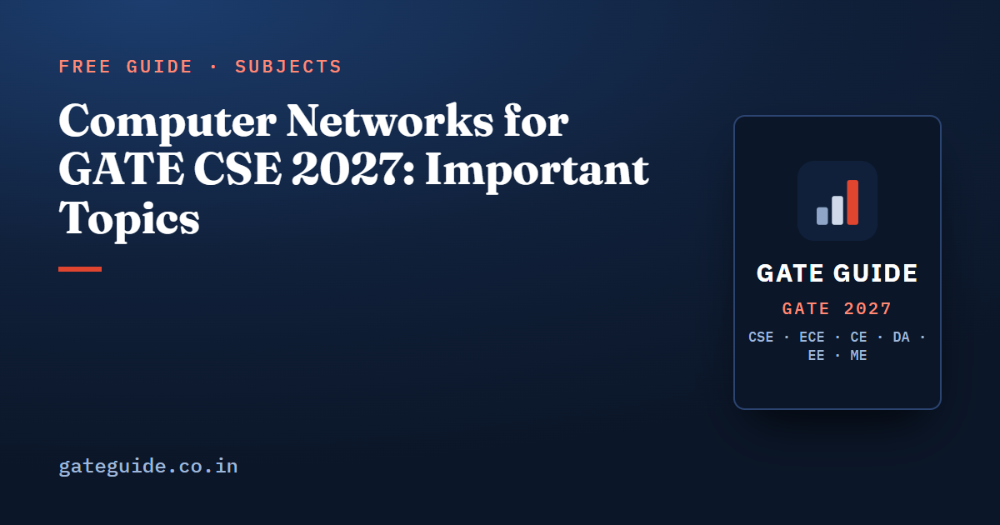

Computer Networks for GATE CSE 2027: Important Topics

Computer Networks is the section whose wording changed most in the GATE 2027 syllabus, but its marks have stayed remarkably stable. The GATE computer networks important topics for 2027 are TCP congestion control, CIDR and subnetting, sliding-window arithmetic and delay calculations, followed by fragmentation, routing, CSMA/CD and CRC. This guide covers what the new syllabus names, a priority table, how each topic is asked, the traps and a short plan.
In this guide
Key takeaways
- The 2027 syllabus narrowed CN: ARP, DHCP, ICMP, UDP as a named topic, SMTP, FTP, email, framing and bridging are no longer named.
- "Performance metrics" and "socket API" are newly explicit.
- Analyst compilations put CN at 6–11 marks in every paper from 2009 to 2026, about 8.2 on average. These figures are unofficial.
- The removed topics were mostly 1-mark recall. The calculation templates that carried most 2-mark CN questions are all retained.
- Most CN marks are lost to conventions: versus , offsets in 8-byte units, and the exact TCP reaction to each loss event.
What the GATE 2027 CN syllabus names
The official GATE 2027 CS syllabus (Section 10) reads:
Principles of Layering; Basics of switching (circuit, packet and virtual circuit) and performance metrics; Data link layer: error detection, Medium Access Control, Ethernet; Distance vector and link state routing; IPv4 - Fragmentation, CIDR Notation, Network Address Translation; TCP - flow control and congestion control, socket API; DNS and HTTP.
Compared with 2026, the changes fall into three groups:
- Removed: OSI and TCP/IP stack enumeration, framing, Ethernet bridging, shortest-path and flooding as stand-alone routing methods, ARP, DHCP, ICMP, UDP as a named topic, SMTP, FTP and email.
- Newly explicit: performance metrics (transmission and propagation delay, RTT, throughput, utilisation, bandwidth-delay product) and the socket API call sequence.
- Retained: switching, error detection, MAC, Ethernet, distance vector and link state routing, IPv4 fragmentation, CIDR, Network Address Translation, TCP flow and congestion control, DNS and HTTP.
The clause-by-clause comparison is in GATE 2027 Computer Networks syllabus changes explained. Confirm the final text at gate2027.iitm.ac.in.
How many marks CN carries
The figures below are third-party analyst compilations from gateexam.info, GeeksforGeeks, careers360, goclasses and PW. They are not official, and analysts differ by 2–3 marks on questions that sit between subjects.
| Period or paper | CN marks (analyst figures) |
|---|---|
| Average, 2009–2017 | about 8.3 |
| Average, 2018–2026 | about 8.0 |
| Overall average, 2009–2026 | about 8.2 |
| Lowest and highest | 6 (2011, 2020, 2026 Shift 1) and 11 (2022) |
| 2026 Shift 1 | 6 (two 1-mark and two 2-mark questions) |
The trend is flat: CN never fell below 6 or rose above 11 in eighteen papers. Topics reported across the 2026 shifts included subnetting and CIDR, routing, TCP congestion phases, sliding-window efficiency, DNS resolution and CRC, and analysts singled out a TCP connection question in Shift 2.
What does the syllabus cut do to these marks? The book estimates that 75–85 percent of CN marks from 2009 to 2026 fell on topics that remain in the 2027 syllabus. This is an estimate, not a measurement. The practical reading is that roughly the same marks now spread over fewer topics. To compare CN with other subjects, see the GATE CSE subject-wise weightage.
CN priority table for GATE 2027
The book ranks each retained CN subtopic with an eight-factor analytical score, including a factor for topics whose share rises because others were removed. The tiers are that ranking, not probabilities of a topic appearing.
| Tier | Topics | Usual format |
|---|---|---|
| Tier 1 (Very High) | TCP congestion control; CIDR and subnetting; sliding-window arithmetic (stop-and-wait, Go-Back-N, Selective Repeat); delay and performance metrics | NAT 2 marks; some 1-mark MSQ or MCQ |
| Tier 2 (High) | IPv4 fragmentation; distance vector routing; CSMA/CD computations; TCP connection management; CRC and error detection; DNS resolution; switching modes; longest prefix match and aggregation; TCP flow control | NAT 2 marks or MSQ 1–2 marks |
| Tier 3 (Moderate) | HTTP; Ethernet and switch counting; ALOHA and backoff; link state routing; Network Address Translation; socket API; Hamming code, parity and checksum | Mostly 1-mark MSQ or MCQ; some NAT |
| Tier 4 (Lower) | Layering principles; RTO estimation | 1-mark MCQ; NAT for RTO |
Based on this analysis, a 2027 CN block of four to six questions would typically hold two or three NAT calculations from the templates below, one or two MSQ statement sets, and at most one short MCQ on a principle. The CN chapter of the GATE CSE 2027 book adds the factor scores for all 22 subtopics, a topic-by-year map marking the 2027 status of each past question type, and a high-probability question bank with worked solutions written for the new syllabus.
The most-tested CN topics and how they are asked
TCP congestion control
The classic form: cwnd starts at 1 MSS with a given ssthresh, a timeout happens in one round and a triple duplicate ACK in another, and you find cwnd or ssthresh at a later round. Other forms ask how many RTTs a file transfer takes with no loss, or present an MSQ on how Tahoe and Reno react to each event. A round-by-round table with three rules solves all of them.
CIDR and subnetting
Two structures recur. "Given a mask, find hosts, subnets or the broadcast address" (2005, 2008, 2010, 2019) and "given a requirement, find the block or the valid allocation" (2012, 2020). Longest-prefix-match forwarding and aggregation of contiguous blocks are close relatives.
A quick example: a /27 block leaves host bits.
Blocks start at multiples of 32 in the last octet, so 10.0.0.64/27 runs from .64 to .95, and .95 is its broadcast address.
Sliding-window arithmetic
The most repeated CN computation. You find the minimum sequence-number bits for a target utilisation, the window size needed for a utilisation, or the throughput of stop-and-wait or a window of frames. The same underlying idea, the bandwidth-delay product, has been asked as sequence bits (2009, 2014, 2015, 2017), window size (2021), throughput (2003, 2016) and wraparound time (2018).
Delay and performance metrics
These combine into store-and-forward questions: total time for packets across links. The 2012 and 2023 questions (1,000 packets over 3 links; 1,000 chunks through one router) share the same structure: first-packet delay plus extra transmission times.
Tier 2 templates
- Fragmentation: number of fragments, or the offset, MF flag and total length of one fragment (2013, 2015, 2016, 2021).
- CSMA/CD: one equation, , with a different unknown each time: minimum frame in 2003, cable length in 2013, signal speed in 2015, minimum frame from propagation time in 2016.
- Distance vector: one Bellman-Ford update from neighbour vectors, or count-to-infinity after a link failure (2011, 2022).
- TCP connection management: sequence and acknowledgement numbers through the handshake, flags and states, often as an MSQ.
- CRC: remainder or transmitted string for a short message and a degree-3 or degree-4 generator, plus detection-capability statements.
- DNS: number of query-response pairs under iterative resolution (2023), plus record and caching statements.
Common CN traps
- Window limits. Go-Back-N sender window ; Selective Repeat window . Watch versus when solving for .
- Fragment offset. Measured in 8-byte units, and data per fragment must be a multiple of 8. Offsets stay absolute after re-fragmentation.
- CSMA/CD. Use the round trip, , not one way.
- Timeout. ssthresh becomes half the current cwnd, not half the old ssthresh, and cwnd restarts at 1 MSS.
- Triple duplicate ACK. Reno sets . Tahoe restarts from 1.
- Slow start cap. Doubling stops at ssthresh; cwnd does not overshoot it.
- Hosts versus addresses. Usable hosts are for host bits; the address count does not subtract 2.
- Forwarding. Longest prefix match decides, not the first or shortest match.
- Sequence numbers. SYN and FIN consume one each; a pure ACK consumes none.
- Store-and-forward. Propagation delay is added once per link, not per packet.
- Units. 1 KB as 1,000 or 1,024 bytes can push a NAT answer outside the accepted range. Recent papers state the convention; read it.
- DNS counting. Whether the client-to-local-resolver exchange counts changes the answer by one, which is exactly what the 2023 question was disputed over.
More cross-subject traps are in common mistakes that cost marks in GATE CSE.
A short CN preparation plan
- Drop the removed topics first. Do not spend revision time on ARP and DHCP message flows, UDP header fields, SMTP and FTP, or OSI layer trivia. Skim them once as background only.
- Build the four Tier 1 templates. For each, solve every relevant previous-year question and keep a one-page note of the formula and its convention. Always draw a round-by-round table for TCP congestion questions.
- Add the Tier 2 calculations. Fragmentation, CSMA/CD, CRC and a distance vector update are each one procedure. Practise until each takes under three minutes.
- Prepare MSQ statement sets. TCP handshake and states, Tahoe versus Reno, which header fields Network Address Translation rewrites, DNS and HTTP behaviour, and socket call order. MSQ has no partial credit, so learn exact rules, not impressions. The MCQ, MSQ and NAT strategy guide explains how to attempt them.
- Give the newly explicit items a short pass. The socket API sequence (socket, bind, listen, accept on the server; socket, connect on the client) and HTTP connection and RTT counting are small topics that the new wording brings forward.
- Revise with formulas and units side by side. The GATE CSE formula sheet collects the key CN formulas.
Frequently asked questions
Which Computer Networks topics are most important for GATE CSE 2027?
The book's analysis puts four topics in Tier 1: TCP congestion control, CIDR and subnetting, sliding-window arithmetic, and delay calculations under performance metrics. Tier 2 covers IPv4 fragmentation, distance vector routing, CSMA/CD, TCP connection management, CRC, DNS resolution, switching modes, longest prefix match and TCP flow control.
How many marks does Computer Networks carry in GATE CSE?
Third-party analyst compilations place Computer Networks at 6 to 11 marks in every paper from 2009 to 2026, with an average of about 8.2 marks. That is usually 4 to 6 questions. The figures are unofficial, and analysts can differ by 2 to 3 marks because some questions sit on subject boundaries.
Are ARP, DHCP, ICMP and UDP in the GATE 2027 syllabus?
They are no longer named. The GATE 2027 Computer Networks syllabus dropped the ARP, DHCP and ICMP clause, UDP as a named topic, SMTP, FTP and email, framing and Ethernet bridging. Treat them as low priority. At most they may appear as background inside questions on retained topics such as TCP, the socket API or IPv4.
Is sliding window protocol still in the GATE CSE 2027 syllabus?
It is not named word for word, but it is reached through performance metrics and TCP flow control, both of which the 2027 syllabus names. Sliding-window arithmetic has been the most repeated Computer Networks computation in past papers, so the book keeps it in Tier 1 for 2027.
What type of Computer Networks questions come in GATE?
Most 2-mark CN questions since 2014 have been NAT items with a small numerical answer, such as a window size, a fragment offset or a congestion window. Since 2021, MSQ statement sets on TCP, Network Address Translation, error detection and DNS or HTTP have been common. The analysis expects a 2027 block to mix two or three NATs with one or two MSQs.
Sources
- GATE 2027 official website (IIT Madras)
- GATE 2027 CS syllabus (official PDF)
- GATE CSE 2027 syllabus changes (gateqa.in)
- GeeksforGeeks subject-wise weightage for GATE CS
- GATE Overflow previous year questions
Dates, fees and the syllabus are set by the GATE 2027 organising institute and can change. Always confirm at gate2027.iitm.ac.in.